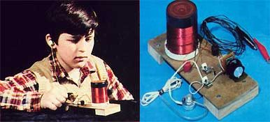
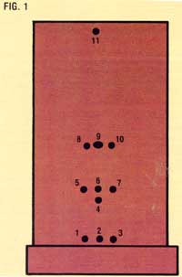
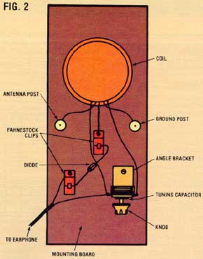
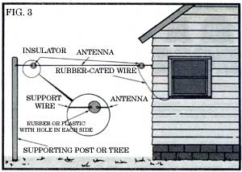

You'll be able to tune in to the airwaves-without paying for electricity-using...
I call my homemade receiver the "Homestead Radio", because-once it's built-it can provide entertainment and information indefinitely, with no operating costs. Additionally, it's the ideal receiver to use outdoors-or during emergency situations-anywhere at all... since it eliminates any dependence upon utilitycompany power or batteries.
The Homestead Radio is actually a modified crystal receiver. Such devices, which were common in the 1920's, later gave way to today's more sophisticated instruments ... those that require access to electrical power sources in return for their superiority. In most folks' eyes, the newer units are worth more because they offer selectivity (the degree to which a receiver allows desired signals to be heard and rejects interfering signals) and sensitivity (the ability to amplify weak, distant broadcasts and to "fine-tune in" the nearby stations). But, though my homemade unit has neither amplifiers nor selective circuits, it does have the advantage of being able to pick up all the power it requires from the very radio waves it receives!
Furthermore, the few parts needed to build it (see the materials list) are usually available, at Radio Shack or other electronic equipment supply stores, for a cost of $5.00 to $8.00. [EDITOR'S NOTE: 365-pF variable tuning capacitors, which are not always readily available else where, may be ordered from All Electronics Corp., Dept. TMEN, 905 South Vermont Avenue, Los Angeles, California 90006 (telephone ,215/380-8000). Write or call for prices.] Better yet, if you can find a "junk" radio or two, you'll probably be able to build the receiver, as I did, from mostly recycled components. Little soldering is necessary to complete the project, and construction time is only about two hours.
Please read all directions before you start building your radio, and don't be concerned if the electrical items you acquire appear different from those in the photograph. As long as the parts match the designations given in the list, their appearance won't make a bit of difference!
Even though constructing the coil is the most time-consuming portion of this project, it's really not a difficult task. Begin by scrounging up some material to serve as the radio's base (mine is 1/8"-thick fiberboard) and a plastic container of approximately the dimensions suggested in the list of materials (I used a cylindrical pill box).
Remove the cap from the container and center the lid, top down, about 1 inch from one end of the board. Now, drill a small hole through both the cap's center and the board, then fasten the two together using a small nut and bolt.
You'll next want to use a pair of pliers to heat a needle in a flame and carefully push it through the plastic container to make Holes 1, 2, and 3, as shown in Fig. 1. (As long as the openings are placed near the mouth of the container and about 3/16 inch apart, their exact locations aren't critical.)
That done, thread the free end of the No. 24 copper wire through Hole 2 (outside to inside) and bring it back out through Hole 1, allowing about 6 inches to protrude. Now, slowly wind 25 turns of wire clockwise (as viewed from the "open" end of the vial) around the plastic. Make sure each wire coil rests snugly next to the preceding one, but don't let the wire cross itself at any point.
After making the 25 loops, cut the wire at a spot about 6 inches from the completion of the last turn. Keep one hand on the coil (so it won't unwind) and make Hole 4. Pass the leftover 6 inches of wire, just cut, through that opening and back out via Hole 3.
Next, use the heated needle to form Holes 5, 6, and 7 on a line about 3/16 inch above the previously wound coil. Place one end of a fresh section of copper wire through Hole 5 and back out Hole 6, so that-again-about a 6-inch length extends from that hole. Wind another 25 turns of wire, and cut it ... leaving, once more, about 6 inches of excess wire.
Then, while again holding the wire taut so as not to lose the turns, make Holes 8, 9. and 10. Pass the unsecured 6-inch wire piece through Hole 8 and back out through Hole 9.
Your next move is to thread the end of your unused wire through Hole 10 and back out Hole 9. (You should now have two wires exiting from Hole 9, both of which are about 6 inches in length.)
Continue winding the remaining wire until you've completed 50 or 60 turns, starting from Hole 10. As before, cut the wire at a point 6 inches from the completion of the last turn, and-while holding the coil-make Hole 11. Pass me final 6 inches of wire through the new opening and back out through Hole 7.
To finish up, wrap a piece of tape (electrical, if you have it) once or twice around the upper few turns of the coil-to prevent them from slipping off the top of the form and undoing your work-and connect the wrapped container to its cap.
The next step is to drill two holes in the mounting board ... one each for the an tenna post and me ground post. (Refer to Fig. 2 before you start.) Locate each 1/8" opening about 1 inch in front of the coil, and in about 5/8 inch from the edge of the board.
Trim the wires coming from Holes 1 and 3 back to about 3-1/4 inches in length, and use medium-fine sandpaper to remove the enamel insulation from about the last inch of each. Take one of these wires and wrap the uninsulated portion about the threaded section of a 5-way binding post... press the threaded portion through one of the holes just drilled ... and fasten the post in place with its small hex nut. ( Repeat this procedure for the other wire, hole, and post.)
Now, shorten the two wires that exit from Hole 9 to about 4 inches apiece, and strip the insulation from the final inch of each. Drill another 1/8" hole about 1 inch in front of the coil and midway between the two posts ... take one of the Fahnestock clips and pass a small bolt through it ... then wrap both ends of the uninaulated portions of the wires extending from Hole 9 around the bolt threads.
At this point, remove the plug from the end of the transistor earphone cord and carefully separate about 4 inches of the double wire, leaving the insulation intact. Then, using wire cutters or a steady penknife, strip the insulation from the last inch of each of the rubber-coated pieces.
Another 1/8-inch hole should now be drilled, about 2 inches from the coil and 3/4 inch from the left side of the board (as viewed with the coil's holes facing you). Assemble the other Fahnestock clip and bolt, and secure one of the uninsulated earphone wires to the clip in the same manner in which you attached the wires from Hole 9 to the other fastener.
By pressing down on the end of the Fahnestock clip, you can now insert one end of the diode wire through the hook in the clip's center. (Repeat this process with the other end of the diode and the other clip, making certain that the diode tip with the colored band on it is closest to the clip that's most distant from the coil.)
Next, mount the angle bracket ... at a point that's the same distance from the coil as is the foremost Fahnestock clip, and on the opposite side of the board (as shown in the photograph). After removing the two hex nuts from the shank of the tuning capacitor, insert that shaft into the hole in the angle bracket and refasten the two nuts. (If you want to do so, now's the time to fit a knob to the end of the tuning shaft.)
Cut each of the remaining two wires-those coming from Holes 6 and 7-to about 4-3/4 inches ... strip the insulation from the final 1-1/4 inch of each ... and wrap the uninsulated portion of the remaining earphone wire around the left terminal of the tuning capacitor. (If your capacitor has both terminals on the same side, it will make no difference which one is used.) Now, encircle the terminal with the uninsulated portion of the wire from Hole 7, forming a double layer of wires. (The enameled wire will hold both layers in place without assistance ... however, either solder or tape may be used to further stabilize the wrapping.)
Finally, twist the "Hole 6" wire around the other terminal of the tuner, and crimp both connections, using a pair of pliers. Complete the assembly of your Homestead Radio by fastening the two small wooden braces to the underside of the mounting board.
To extract the highest level of performance from your homemade radio, you'll need to connect it to a good antennaground system. To prepare for such a hookup, it's best to attach sections of robber-coated wire, each 40 to 80 inches in length, to the antenna post and to the ground post. It would also be convenient, though not necessary, to fasten alligator clips to the ends of both of these wires.
If you live in or near a city with a radio station, you can simply connect the antenna to the metal finger-stop on your telephone and use Ma Bell's wires as your antenna. If, however, you don't own a phone-or if you do but reside well out of town-it'll be necessary to string up an outdoor antenna. (Again, No. 24 wire will work fine.)
Ideally, the antenna should be between 80 and 115 feet in length, and as high as is practical. For optimum performance, you should insulate each end of the antenna from its respective mounting, and connect the radio to the antenna using the shortest piece of rubber-coated wire possible. (See Fig. 3 for suggested installation details.) Last of all, secure the ground wire to a water pipe (or to a metal rod driven into the earth).
After all those connections have been made, you'll be able to pick up stations by simply adjusting the position of the variable tuning capacitor.
You now possess a radio that won't stop playing as long as there's a signal close enough for it to pick up ... and one that will require no maintenance, provided you don't play frisbee with it.
Don't be surprised, though, if you hear some rather strange sounds emanating from your earphone from time to time. The radio I built receives stations across the entire AM band, as well as some signals on the low end of the shortwave band. I can even pick up broadcasts from the LORAN beacon, which provides navigational aid to ships at sea.
And, even if you seldom actually use the homemade receiver, you'll be glad to know that you'll always have a source of radio reception, come what may ... and that the device will play almost forever, for free!
EDITOR'S NOTE: Readers who are interested in electrical projects will want to read the article on page 176.
|
 STAFF PHOTOS |
 |
 |
|
 |
|
|